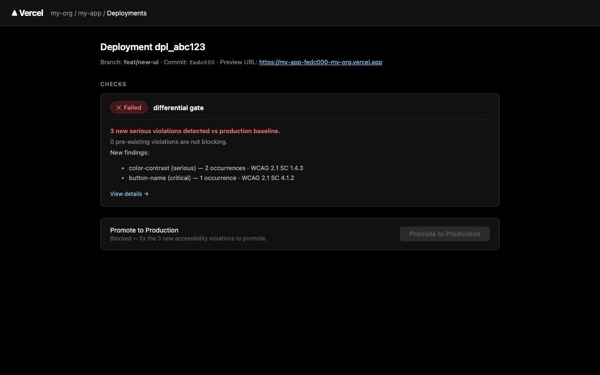
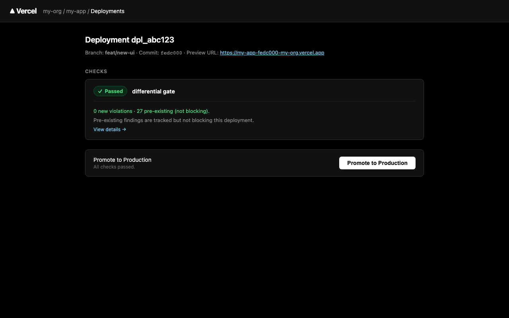
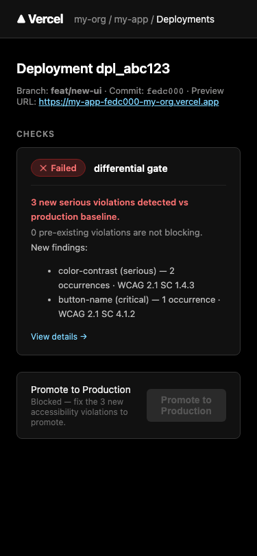
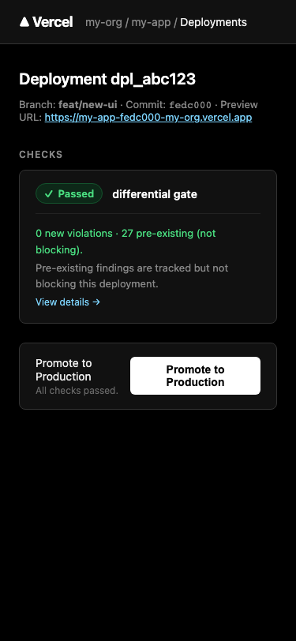

What this module is
@ariada-org/diff-schema + diff-stub) is real and
published. The operational dashboard UI shown here does not yet exist as shipped
code — it is a design specification for the future commercial dashboard product.
The Ariada CI gate dashboard is the developer-facing read surface for the differential accessibility gate: a pull-request check card (GitHub Checks API) plus a companion web dashboard that breaks down new violations, pre-existing tracked findings, and the pass / block decision — without burying the developer in a wall of axe-core JSON.
@ariada-org/diff-schema
+ diff-stub + diff-action) is real and published on npm.
The operational dashboard and the full differential engine (patent-protected AI-vs-human
thresholds, policy language) are the roadmap for clamper.ai,
which is not yet launched.
- Type
- GitHub Checks API card + companion web dashboard (design specification)
- OSS layer
@ariada-org/diff-schema+diff-stub+diff-action— equality-only gate; real and published- Paid layer
- Differential AI-vs-human thresholds + policy language → clamper.ai (not yet launched; Patent B)
- Status
- Dashboard: design mockup only. Gate packages: published at 0.1.0 with Sigstore provenance.
Who uses it & why
| Role | How they use it | Value |
|---|---|---|
| Frontend / QA developer | Sees a pass/block signal on every PR without reading raw axe JSON | High — reduces review friction |
| Engineering lead | Sets differential thresholds (new-violations-only vs all) per repository | High |
| Accessibility engineer | Drills into the new-vs-pre-existing breakdown; tracks regression over time | High |
| Compliance team | Uses the gate log as an audit trail for EAA / ADA compliance evidence | Medium-High |
The gate dashboard turns the scanner's output into a blocking CI signal: developers cannot merge a PR that introduces new accessibility violations without an explicit bypass decision by an authorized reviewer.
Distribution — what's free, what's paid, how we earn
The differential gate is open-core. The equality-only OSS gate
(diff-stub) is free. The full differential engine with AI-vs-human
thresholds and a policy language is the roadmap for clamper.ai
(Patent B), which is not yet launched and has no published pricing.
| Capability | Tier | Where |
|---|---|---|
| Fingerprint + selector-normalise for equality comparison | Free / OSS | @ariada-org/diff-schema |
| Equality-only pass / block gate | Free / OSS | @ariada-org/diff-stub |
| Composite GitHub Action wrapping the gate | Free / OSS | @ariada-org/diff-action |
| Full differential AI-vs-human thresholds + policy language | Paid (roadmap) | clamper.ai (Patent B — not yet launched) |
| Operational dashboard UI | Paid (roadmap) | clamper.ai |
Go-to-market & adoption path
- Discover — npm + GitHub Actions marketplace listing for
diff-action. - First value — add the Action to an existing CI workflow in under 5 minutes; the equality-only gate blocks regressions immediately.
- Need the full differential — teams that need AI-vs-human thresholds or a policy language sign up for the clamper.ai waitlist.
- Convert — clamper.ai replaces the OSS gate without changing the workflow file (same Action, different engine).
Documentation & help — current state
- Action usage
uses: ariada-org/diff-action@v0.1— see the README for the requiredscan-resultinput and thegate-resultoutput.- Docs site
apps/docs(Astro Starlight) needs a "CI Gate" page: install → configure baseline → read the check card → handle a block.- Dashboard docs
- Not yet written — the dashboard itself is not yet shipped.
AI chat & digital-adoption helpers — plan
Screenshots — click any image to open it full size
From the end-to-end Playwright harness. Each thumbnail opens a full-size, zoomable overlay.




Assessment summary
Full assessment is in assessment.html. Headline: the design mockup follows GitHub Checks API conventions and Codecov / SonarCloud patterns for PR comment summaries. Key gap: the dashboard is a design specification only — no operational code ships yet. The OSS gate packages are real.